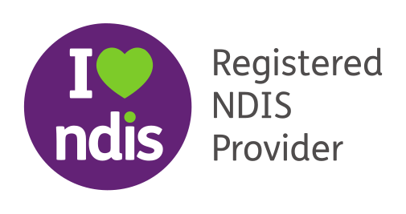
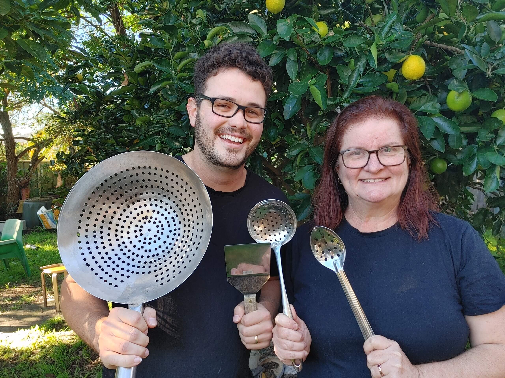

Cherry Tree Cooks
Cherry Tree is a family-run business with a noble mission: to teach people with autism and intellectual disabilities how to cook in a safe, supportive, and kind environment.

Our services
Cooking classes
Beginner friendly cooking classes
Learn to cook for yourself
Hands on – everybody cooks
Expert trainers
1:1 private class or group classes
All ingredients and utensils provided
Western Sydney location
Food safety
Introductory 1 hour staff training for organisations covering the 5 key areas of food safety.
Hands on and interactive
Simple English handouts
Group bookings only
Trainer has 17 years experience teaching Food Safety
Coffee training
We teach coffee extraction, milk texturising, and 11 coffees from the coffee menu.
About us
Cherry Tree is a family-run business with a noble mission: to teach people with autism and intellectual disabilities how to cook in a safe, supportive, and kind environment. This space is designed to embrace the learning process, where mistakes, spills, overcooking, and undercooking are seen not as failures but as opportunities for growth and education. With our extensive experience, we transform these challenges into valuable lessons, ensuring that every dish or part of it can be salvaged and enjoyed.
A Safe and Engaging Learning Environment
At Cherry Tree, we provide a secure and engaging space where participants can thrive, socialise, and learn essential cooking skills. Our classes are tailored to promote confidence and independence, covering fundamental skills such as knife handling, reading and following recipes, and safely using various cooking utensils. Participants also learn about the six essential nutrients and the five food groups, empowering them to prepare healthy meals for themselves. Our goal is to help them develop new skills, gain independence, and even acquire competencies that could lead to job opportunities.
Founders Dedicated to Inclusivity

Cherry Tree's inclusive cooking classes were founded by Jenny and Phil, a dedicated mother-in-law and son-in-law team. They are committed to celebrating diversity, inclusion, and individual differences.
Jenny's Expertise and Vision
Jenny brings 17 years of experience as a NSW High School teacher, having taught Food Technology and Hospitality across nine high schools. She has successfully set up and run two cafes following government tenders. Jenny's lived experience with disability profoundly influences her work. She was a guardian to her brother, Paulie, who had cerebral palsy until he passed away, and she is a sibling to Brendon, who is non-verbal and has autism. The inspiration to establish Cherry Tree stemmed from her deep desire to meet the needs of diverse individuals through professionalism, kindness, organisation, inclusivity, and empathy.
Phil's Dedication and Skills
Phil has served as a support worker for four years, assisting participants with complex needs in the community. His passion for these experiences led him to formalise his skills by completing a Certificate IV in Disability. Phil is known for his patience, kindness, and empathy, as well as his exceptional cooking skills. His lived experience with disability includes being one of seven boys, two of whom have disabilities, and he himself has a task-limiting condition.
Our Commitment to Diversity and Inclusion
At Cherry Tree, we are committed to creating an inclusive and diverse environment where everyone is celebrated for their unique abilities and contributions. We believe that through our cooking classes, we can make a significant impact on the lives of individuals with autism and intellectual disabilities, helping them to achieve greater independence and self-confidence.
Cherry Tree stands as a beacon of hope and empowerment for individuals with autism and intellectual disabilities. Founded by Jenny and Phil, who both bring a wealth of professional and personal experience, Cherry Tree is dedicated to providing a nurturing and inclusive space where participants can learn, grow, and thrive. We celebrate every individual's journey and are passionate about making a difference in their lives through the joy of cooking.
Testimonials
We extend our heartfelt thanks … especially Jenny and Phil, for giving our students the valuable opportunity to learn new skills that will aid them in their future employment. We are deeply grateful to everyone involved for the kindness shown to our students. You are all truly amazing, and the community is blessed to have such wonderful people supporting them. God bless you all. — Holy Spirit Catholic College